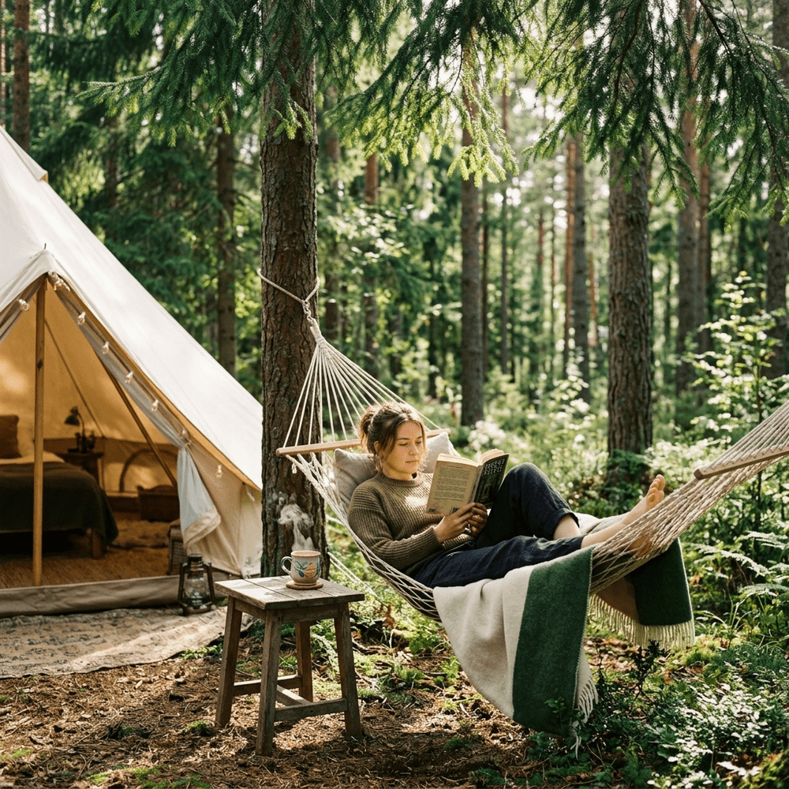

Kapan terakhir kali Anda menghabiskan satu hari penuh tanpa memeriksa lini masa Instagram, TikTok, atau deretan grup pesan kerja di WhatsApp? Sulit mengingatnya, bukan?
Ketergantungan kita pada paparan layar gawai kini mencapai titik di mana bunyi notifikasi berdenyut tanpa sadar memicu pelepasan adrenalin dan stres kronis. Fenomena inilah yang memicu tren pelesiran terbaru bernama Digital Detox (Detoksifikasi Digital) atau puasa media siber. Di kawasan rimbun Batu Sunrise Camp, pesona alam tidak selamanya menuntut untuk direkam lantas "di-story-kan" di media sosial. Terkadang, ia hanya meminta Anda diam membisu dan meresapinya dengan kelima panca indera yang sesungguhnya.
1. Memahami Urgensi Digital Detox
Digital Detox bukanlah hukuman pengasingan diri layaknya manusia purba di dalam gua. Praktek ini sejatinya adalah sebuah hadiah penebus kemerdekaan bagi otak kiri Anda yang telah dibombardir oleh kelebihan beban informasi (information overload) dunia siber. Mesi area perkemahan Batu Sunrise Camp menyediakan titik koneksi Wi-Fi yang handal, banyak pelancong sadar kesehatan mental era baru justru dengan mantap memilih opsi mematikan jaringan telepon genggamnya sebelum kendaraan menanjaki pintu masuk kawasan wisata.
Manfaat langsung 24-jam tanpa layar gawai sangat krusial; mulai dari normalisasi produksi melanin yang mengembalikan kualitas tidur nyenyak layaknya bayi, ketajaman kognitif dalam menelan halaman-halaman buku cetak, hingga meluapnya hormon empati yang meningkatkan kepekaan bahasa tubuh lawan bicara Anda (pasangan atau keluarga) ke tingkat terdalam.
2. Menggantikan *Scrolling* dengan Aktivitas Fisik Sejati
Ada ketakutan massal bahwa mematikan koneksi internet akan menuntun pada rasa mati bosan (fomo). Padahal, memutus pandangan dari layar resolusi kecil gawai otomatis akan membukakan pandangan sinematik langsung berskala raksasa 360 derajat di sekitar kemah Anda. Berikut tiga cara mematikan rasa *fomo* tersebut:
- Ayunan Dekap Hammock (Tempat Tidur Gantung): Pasanglah selembar rajutan hammock di antara dua batang batang pohon cemara pinus berongga. Renggangkan tulang punggung, dan nikmatilah menelan tamatan sebuah buku prosa fiksi kuno sembari bergoyang pasrah bertiup udara dingin. Ini hobi nostalgia tanpa celah.
- Bercocok Jurnal Tulisan Tangan: Anda merindukan bentuk kursif pena di atas buku berserat kasar? Tuangkan sisa memori, keluh kesah karir atau target resolusi masa depan murni dengan gesekan tinta di halaman *diary* log perjalanan Anda langsung di depan api perapian hangat di teras tenda.
- Stargazing Menggunakan Konstelasi Mata Telanjang: Tahan niat Anda menjepret kilatan Bimasakti guna menuai balasan *likes*. Duduklah bersandar di kursi lipat *camping* Anda, tengadahkan wajah mendongak langit, lantas berusahalah menghitung secara manual gerak jatuh bintang meteor atau mencari rasi Orion di pekat jernihnya malam dataran Gunung Banyak.
3. Berpuasa Internet di Fasilitas Mewah
Meski mengedukasi pelancong mendiamkan ponselnya, namun konsep Glamping di Batu Sunrise Camp tidak lalu menelantarkan sisi pelayanannya. Detoksifikasi ini bukan berarti memboyong nestapa. Saat perut kelaparan pasca tamat membaca Novel 300 halaman, atau tatkala embun subuh mencambuk tengkuk, dapur operasional akan senantiasa setia menuntaskan dahaga dan nafsu biologis pelancong.
Tenda kami tidak mengharuskan Anda kelelahan menebang kayu bakar memompa air. Kami memberikan jeda kemudahan fasilitas *hotel berbintang* sehingga Anda sungguh tak perlu repot melakukan kegiatan kasar berat apalagi mencemaskan survival fisik dasar.
4. Penutup: Mengendalikan Teknologi, Bukan Dikendalikan
Akhir pekan singkat dengan disiplin karantina layar HP sama artinya dengan mengambil kembali kendali daulat fungsi otak yang telah lama dirampok mesin algoritma korporasi digital. Tidak apa-apa, dunia maya itu takkan runtuh hanya gara-gara Anda luput berbalas cuitan kawan di Twitter dan menolak melihat email si bos selama dua malam. Bangun kembali batas toleransi jiwa yang jernih di bilik rimbun pinus Batu Sunrise Camp!
5. FAQ Terkait Liburan Tanpa Gadget
Adiel Ebert Nakula Shandy
Senior Outdoor Enthusiast & Web Developer. Percaya bahwa kebahagiaan terletak pada matinya koneksi wi-fi dan kuatnya persaudaraan.